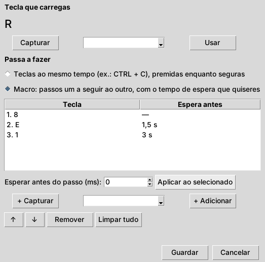

Capturas
Uma janela para ver os atalhos e outra para os criar. Clica numa imagem para a ampliar.


O KB Macro troca uma tecla física por outra, por várias ao mesmo tempo ou por uma macro com o tempo de espera que escolheres. Funciona em qualquer programa ou jogo.
Leve, sem configurações escondidas e sem depender do ambiente gráfico.
Trabalha ao nível do kernel, por isso funciona em X11, Wayland, na consola e dentro de jogos.
Quantos passos quiseres, cada um com a sua espera antes. 1000 ms = 1 segundo.
Carrega várias teclas juntas e mantém-nas premidas enquanto seguras a tua tecla.
Carregas em Capturar e depois na tecla. Ou escolhes da lista com todas as teclas do Linux, incluindo multimédia e botões de comando.
Com --run remapeia sem janela e recarrega sozinho quando mudas os atalhos.
Os atalhos ficam num ficheiro simples que podes editar à mão ou copiar para outro PC.
Cada atalho escolhe o que a tecla passa a fazer.
As teclas ficam premidas enquanto seguras a tua. Bom para atalhos ou para andar num jogo.
Passos um a seguir ao outro, com o tempo de espera que quiseres antes de cada um.
Uma janela para ver os atalhos e outra para os criar. Clica numa imagem para a ampliar.

Funciona em Arch, Debian/Ubuntu, Fedora e openSUSE. O script instala o python-evdev e o tk e dá ao teu utilizador acesso ao teclado.
git clone https://github.com/Ribeiro-MD/KB-Macro.git cd KB-Macro
./install.sh # ou: ./install.sh --autostart
Com --autostart o remapeamento liga sozinho quando entras na sessão.
É preciso para o grupo input contar. Depois abre o KeyBinds no menu ou corre ./keybinds.py.
Criar um atalho demora uns segundos.
Fica em ~/.config/keybinds/config.json. Em waits vai a espera em ms antes de cada tecla.
{
"autostart": true,
"mappings": [
{"from": "R", "to": ["LEFTCTRL", "C"], "mode": "combo"},
{"from": "T", "to": ["8", "E", "1"],
"mode": "sequence", "waits": [0, 1500, 3000]}
]
}
Sem janela, a recarregar sozinho quando o ficheiro muda:
./keybinds.py --run
O que costuma aparecer.
Lê os teclados em /dev/input com evdev, agarra-os e reenvia tudo por um teclado virtual em /dev/uinput, trocando só as teclas que configuraste.
Para o programa poder ler o teclado sem correr como root. É o mesmo que pedem outros remapeadores como o keyd ou o input-remapper.
Fecha o KB Macro (ou Ctrl+C no modo --run) e o teclado volta ao normal.
Confirma que correste o install.sh e que terminaste a sessão depois. Podes ver com groups se o input aparece.
Não, é só para Linux.